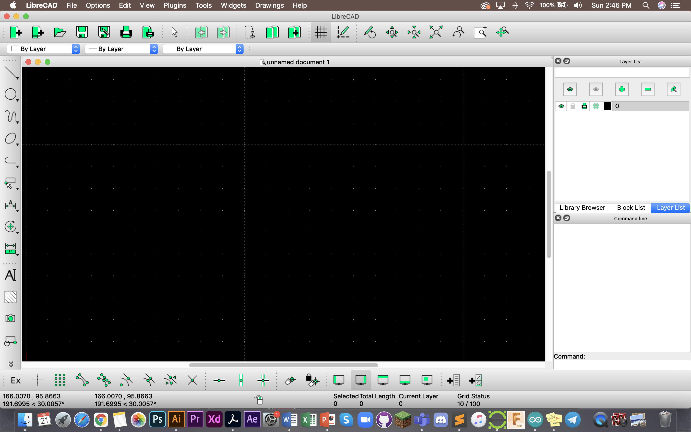
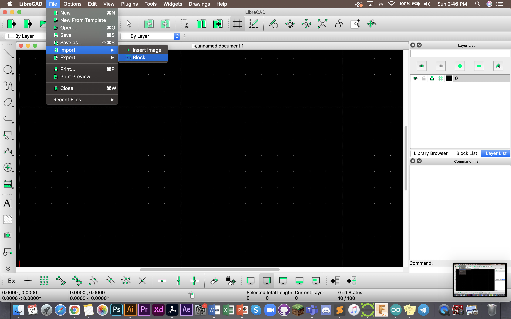
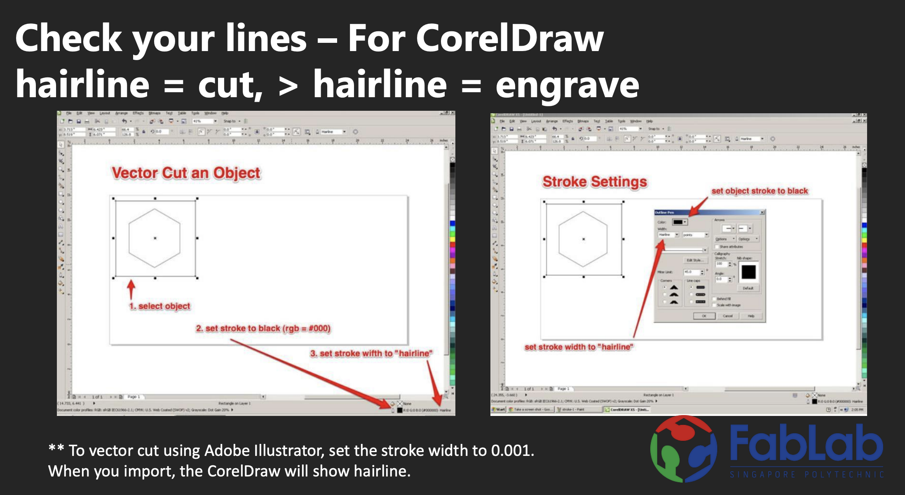
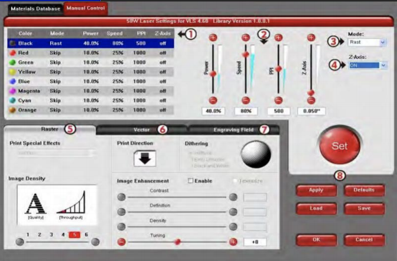
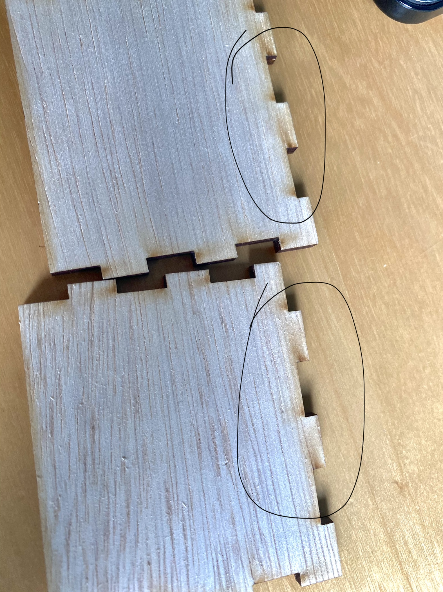

Computer Controlled Cutting
Laser Cutting
Laser cutters basically make use of a laser beam created in a tube of CO2 gas to cut different materials.
- Laser actually vapourises the surface
- laser light is pulsed to cut through, (e.g because wood is not so dense it needs to be pulsed faster, that is how you control the cutting.)
- Some of the main things you can adjust in a laser cutter is its SPEED and POWER.
- You CANNOT cut MDM. (It is like a mix of sawdust and glue packed together. The glue that holds it together vapourises into a toxic gas.
LibreCAD
Recommend to use LibreCAD or AUTOCAD (but LibreCAD is free)
In this case I did not use LibreCAD, I manually imported each piece into the software.

This is what the software looks like, this is what it looks like empty. What it can do is basically allow you to put your sketches together (that you did in Fusion 360, check out Computer Aided Design tab for more), to put together a concise file to allow you to print your work with ease. This also helps when you want to save space and material.

To import your DXF files, mouse over to file>import>block.
Doing this will open up your files and give you the option to import the sketches you want via self selection.
Printing a box (and printing on the Universal VLS 6.60)

I did not manage to take picture of the cutting, but these are the components that have been cut. These components were designed in Fusion 360 and cut on a Unviversal VLS 6.60 laser cutter.
Use CorelDraw to prep your files to send to the printer. CorelDraw shows you your hairline. You can see this in the image below provided by FabLab. 
This is what Universal looks like, this is where you adjust settings.

In this case, we are using 3mm Plywood to cut the box.
settings to cut 3mm plywood: 40% power, 6% speed
It is important to have the right settings so as to cut your material cleanly and without "overburning" it.

This is what it can look like if the laser was too powerful. If the speed is too fast, the laser may not cut through the wood.